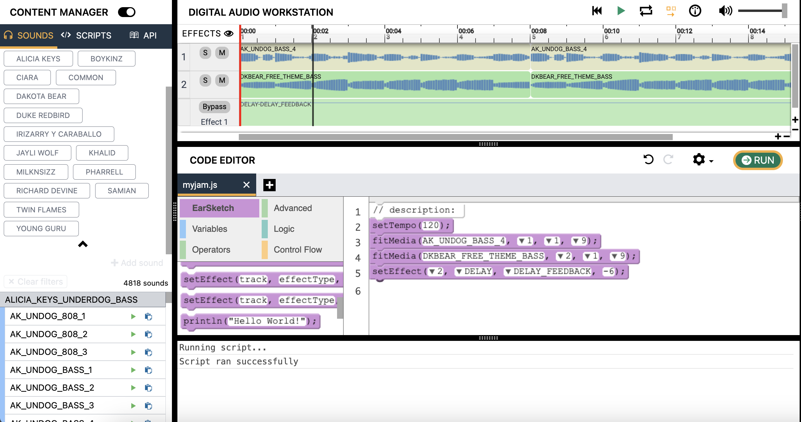

Actividad 3 - Agregar efectos a nuestra canción
Efectos en EarSketch
Los efectos permiten al productor alterar el sonido del clip de audio en su propio sonido único. Similar a cómo usamos fitMedia() para agregar nuevos clips de audio, debemos usar la función setEffect() para definir efectos específicos para cada clip de audio. Es importante tener en cuenta que se pueden colocar múltiples efectos en la misma pista. Esto permite al productor combinar varios efectos juntos. EarSketch tiene muchos efectos incorporados. Para hacer referencia a todos los efectos, visite este enlace
y asegúrese de que el panel Curriculum esté seleccionado en la barra de navegación.
Antes de comenzar a agregar efectos a nuestra canción, desglosemos las piezas de las dos funciones setEffect:
track: El número de pista al que se aplica el efecto. Nota: Para aplicar un efecto a la pista Master, use 0 como valor para la pista. La pista maestra es donde se reproducen colectivamente todos los audios. Esta es una manera fácil de aplicar un efecto a todos los sonidos que se están procesando.effectType: El efecto específico que se está utilizando.effectParameter: La configuración para el efecto que se está utilizando.effectValue: El valor aplicado al efectoParameter.
Agregar la función setEffect a su canción
Ahora que estamos más familiarizados con el uso de efectos, agreguemos un efecto a nuestra canción.
- Encuentre el bloque de función
setEffect. Hay dos bloquessetEffect; elija el primero en la parte superior. Arrastre el bloque al script debajo de sus bloques de código existentes. - Necesitamos reemplazar los parámetros con nuestros propios valores. Use el menú desplegable para reemplazar
trackcon 2 (o cualquier número que desee). - Use el menú desplegable para ver los diferentes efectos que se pueden seleccionar para el parámetro
effectType. Seleccione DELAY comoeffectType. - Ahora que hemos elegido nuestro
effectType, necesitamos unparameter. Seleccione DELAY_FEEDBACK paraparameter. - Para el último parámetro, ingrese un valor válido. Dado que hemos elegido DELAY_FEEDBACK, debemos especificar un número entre -120,0 y -1,0. Ejemplo: Use -6,0 como valor de efecto para DELAY_FEEDBACK.
Su código ahora debería verse algo así:
